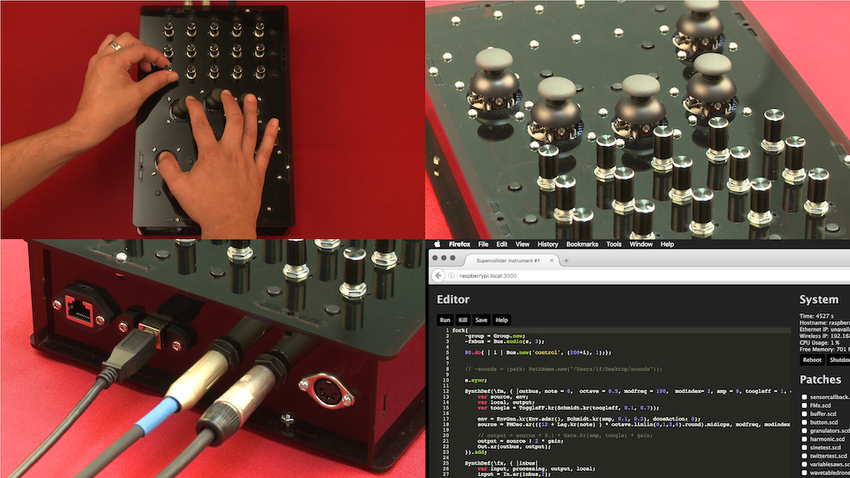

Our goal is to explore models for self-contained programmable synthesizers, gathering attributes from both hardware synths and computer-based systems.

Why?
Electronic music is usually created using hardware synthesizers, computer software or a mix of both.
The computer offers immense power and flexibility in digital music instruments. It can do complex sound synthesis, integrate algorithmic processes or even be played with radically different physical controllers.
In turn hardware synthesizers are devices dedicated to music making, containing important instrumental qualities that promote a focus on the embodied cognitive activity of performance. They are also generally better concerning longevity, reliability and most importantly learnability.
We think there is an opportunity to explore new hybrid designs in synthesizers. Many previous hardware devices have included some form of reconfigurability but not many have embraced computation strongly or deeply explored the concept of a highly programmable synthesizer. The goal of this project is to offer freely accessible technologies to build such instruments. While electronics and programming might initially seem like a high-entry barrier, offering a stable platform, with collections of assembly instructions and working code snippets, is a way to incite learning and rapid results for both beginners and experts.
How?
Naturally building a synthesizer requires some DIY chops but with Prynth that barrier is relatively low. It’s intentionally kept simple and following a plug-and-play logic of accessible components, for learning and quick prototyping.
The essential requirements for building a Prynth synth include:
- Installing up a Raspberry Pi image
- Uploading a Teensy program
- Ordering PCBs and components online
- Soldering through-hole components
- Minimal Unix terminal commands
While some of these tasks might seem daunting they should be easily achieved with step-by-step instruction manuals.
In the first phase we’ll simply release the beta building block technologies but if there is enough interest we could grow to provide detailed wizards, assembling instructions, code snippets and discussion forums.
Learn more about this framework
Who?
| This project is part of the research of Ivan Franco at the Input Devices and Music Interaction Laboratory (IDMIL) / CIRMMT / McGill University, under the supervision of Marcelo M. Wanderley and funded by the Fundação para a Ciência e Tecnologia (FCT). |
{kind=link}